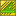

TechDraw GeomHatch |
| Menu location |
|---|
| TechDraw → GeomHatch |
| Workbenches |
| TechDraw |
| Default shortcut |
| See also |
| TechDraw Hatching |
{kind=link}
Description
The Geometric Hatch tool fill a Face with a pattern based on an AutoDesk PAT hatching specification. A small set of sample patterns are available in ".../Mod/TechDraw/PAT/FCPAT.pat".
How to use
- Select an closed region in a View. The region will turn green.
- Press the  Hatch button
- a dialog will open where you may select your pattern, a scale for the pattern and a line weight.
- You may need to press recompute
 and/or "wiggle" the parent View to get the pattern to update.
and/or "wiggle" the parent View to get the pattern to update.
{kind=link}
Options
None.
Properties
- DATASource: The View and Face to receive the hatch pattern.
- DATAFile Pattern: The location of the PAT file to use.
- DATAName Pattern: The name of the PAT specification within File Pattern.
- DATAScale Pattern: The scale to be applied to the pattern (must be > 0.0).
- VIEWWeight Pattern: The thickness of the pattern lines.
- VIEWColor Pattern: The color for the pattern lines.
Scripting
Hatch can be added to areas in Views using Python.
hatch = FreeCAD.ActiveDocument.addObject('TechDraw::DrawGeomHatch','GeomHatch')
hatch.Source = (view1,["Face0"])
hatch.FilePattern = "path/to/myPATfile.pat"
hatch.NamePattern = "Diamond"
rc = page.addView(hatch)
Notes
- Hatching is vulnerable to the infamous "topological naming problem". Best Practice is to defer Hatching until the design is stable.
- Note that geometric hatch patterns ARE included when a drawing page is saved as an Svg file.